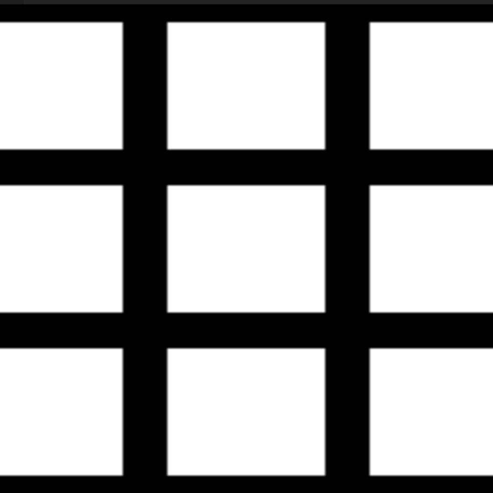
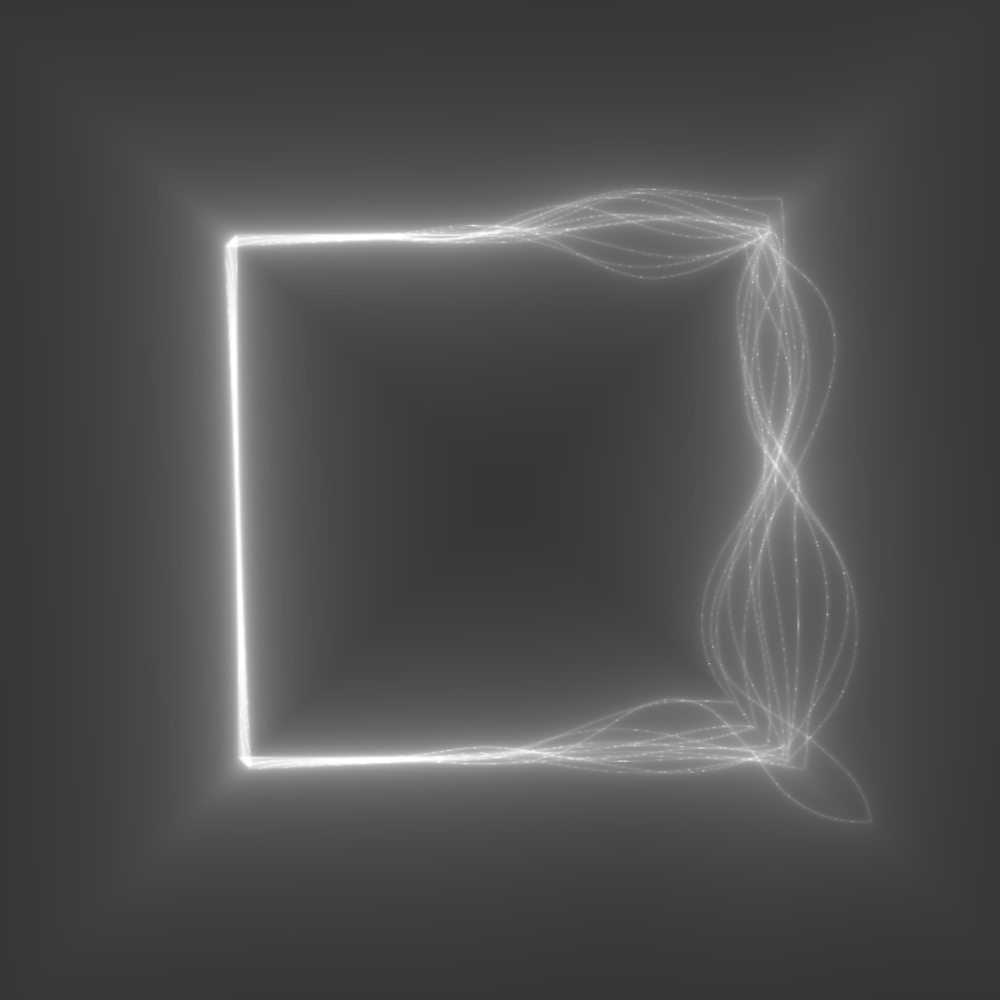
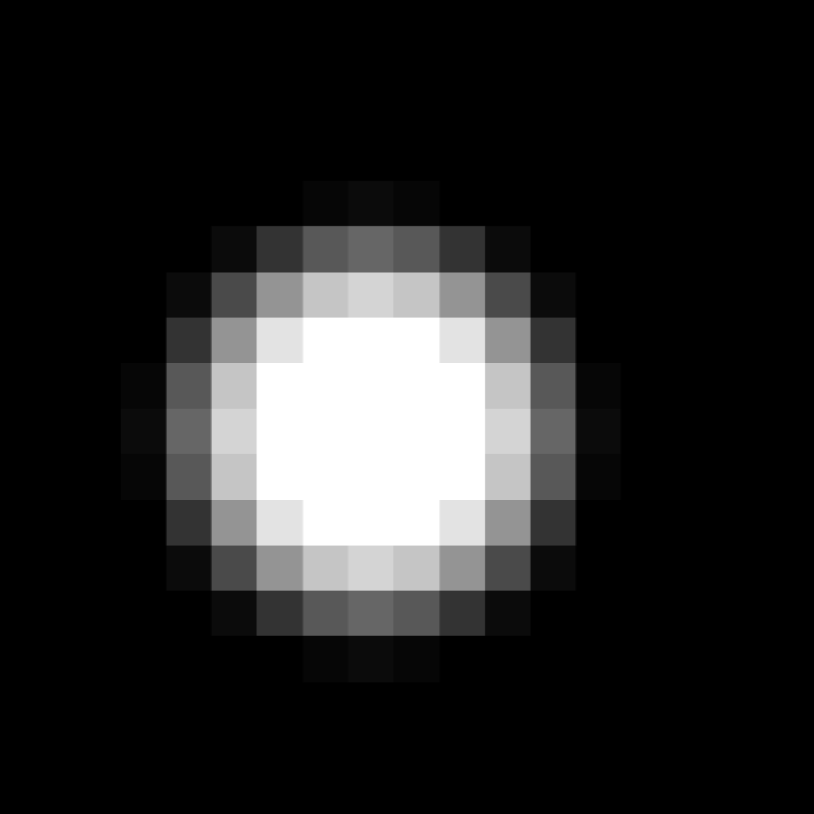

美學運算 教學
Computational Aesthetics*本頁建議使用pc觀看喔!*
Fundamentals
使用他人的程式碼之前要標明作者和出處
// Author:
// Title:
#ifdef GL_ES
precision mediump float;
#endif
系統參數
uniform vec2 u_resolution;// 畫面解析度
uniform vec2 u_mouse;// 使用滑鼠座標
uniform float u_time;// 系統時間
註解方式 : // (兩條斜線)
// set glslCanvas
vec2 uv = gl_FragCoord.xy/u_resolution.xy;
uv= uv*2.0-1.0;
uv.x *= u_resolution.x/u_resolution.y;
I. Glow
> common functions
float glow(float d, float str, float thickness){
return thickness / pow(d, str);
}
//Gradient Noise
vec2 hash2( vec2 x ) //亂數範圍 [-1,1]
{
const vec2 k = vec2( 0.3183099, 0.3678794 );
x = x*k + k.yx;
return -1.0 + 2.0*fract( 16.0 * k*fract( x.x*x.y*(x.x+x.y)) );
}
float gnoise( in vec2 p ) //亂數範圍 [-1,1]
{
vec2 i = floor( p );
vec2 f = fract( p );
vec2 u = f*f*(3.0-2.0*f);
return mix( mix( dot( hash2( i + vec2(0.0,0.0) ), f - vec2(0.0,0.0) ),
dot( hash2( i + vec2(1.0,0.0) ), f - vec2(1.0,0.0) ), u.x),
mix( dot( hash2( i + vec2(0.0,1.0) ), f - vec2(0.0,1.0) ),
dot( hash2( i + vec2(1.0,1.0) ), f - vec2(1.0,1.0) ), u.x), u.y);
}
float noise( in vec2 p ) //亂數範圍 [-1,1]
{
#ifdef Use_Perlin
return gnoise(p); //gradient noise
#elif defined Use_Value
return vnoise(p); //value noise
#endif
return 0.0;
}
float fbm(in vec2 uv) //亂數範圍 [-1,1]
{
float f; //fbm - fractal noise (4 octaves)
mat2 m = mat2( 1.6, 1.2, -1.2, 1.6 );
f = 0.5000*gnoise( uv ); uv = m*uv;
f += 0.2500*gnoise( uv ); uv = m*uv;
f += 0.1250*gnoise( uv ); uv = m*uv;
f += 0.0625*gnoise( uv ); uv = m*uv;
return f;
}
> Glow Circle
void main() {
vec2 uv = gl_FragCoord.xy/u_resolution.xy;
uv.x *= u_resolution.x/u_resolution.y;
uv= uv*2.0-1.0;
//定義圓環
float dist = length(uv);
float circle_dist = abs(dist-0.3);
float glow_circle = glow(circle_dist, 0.6, 0.05);
//第一種寫法 by thickness/pow(dist, strength)
//glow_circle= exp(-20.0*circle_dist)+exp(-200.0*circle_dist);
//第二種寫法 by exp(-scale*dist)
gl_FragColor = vec4(vec3(glow_circle),1.0);
}

> Imperfect Circle
void main() {
vec2 st = gl_FragCoord.xy/u_resolution.xy; //[0,1]
//st.x *= u_resolution.x/u_resolution.y; //[0~1.33]
vec2 uv = st*2.0-1.0; //[0,1] -> [-1,1]
//uv.x *= u_resolution.x/u_resolution.y; //[-1.33~1.33]
float distance = blength(uv)+0.4*fbm(uv*2.008);
//sqrt(uv.x*uv.x+uv.y*uv.y)
float circle_dist= abs(distance-0.380);
//float breathing= sin(u_time/2.0*3.14159)*0.2+0.5; //[0.3, 0.7]
float breathing= mix(0.3, 0.7,
sin(u_time/2.0*3.14159)*0.5+0.5); //[0.3, 0.7]
float glow_circle= glow(circle_dist,breathing,0.074);
//亂數作用雲霧
float fog= fbm(0.4*uv+vec2(-0.2*u_time, -0.02*u_time))*0.6+0.1;
vec3 color = vec3(glow_circle+fog)*vec3(1.000,0.348,0.006);
gl_FragColor = vec4(color,1.0);
}

> Breathing Glow
void main() {
vec2 uv = gl_FragCoord.xy/u_resolution.xy;
uv.x *= u_resolution.x/u_resolution.y;
uv= uv*2.0-1.0;
//陰晴圓缺
float pi=3.14159;
float theta=2.0*pi*u_time/8.0;
vec2 point=vec2(sin(theta), cos(theta));
float dir= dot(point, (uv))+0.55;
//亂數作用雲霧
float fog= fbm(0.4*uv+vec2(-0.1*u_time, -0.02*u_time))*0.6+0.1;
//定義圓環
float dist = length(uv);
float circle_dist = abs(dist-0.512);//光環大小
//動態呼吸
float breathing=sin(2.0*u_time/5.0*pi)*0.5+0.2;//option1
//float breathing=(exp(sin(u_time/2.0*pi)) - 0.36787944)
//*0.42545906412;//option2 錯誤
//float breathing=(exp(sin(u_time/2.0*pi)) - 0.36787944)
//*0.42545906412;//option2 正確
float strength =(0.2*breathing+0.180);
//[0.2~0.3] //光暈強度加上動態時間營造呼吸感
float thickness=(0.1*breathing+0.084);
//[0.1~0.2] //光環厚度 營造呼吸感
float glow_circle = glow(circle_dist, strength, thickness);
gl_FragColor = vec4((vec3(glow_circle)+fog)
*dir*vec3(1.0, 0.5, 0.25),1.0);
}

II. Square
> common functions
float glow(float d, float str, float thickness){
return thickness / pow(d, str);
}
float disc(vec2 P, float size){
return length(P) - size/2.;
}
#define M_SQRT_2 1.41421356
float heart(vec2 P, float size){
float x = M_SQRT_2/2. * (P.x - P.y);
float y = M_SQRT_2/2. * (P.x + P.y);
float r1 = max(abs(x),abs(y))-size/3.5;
float r2 = length(M_SQRT_2/2.*vec2(1.,-1.)-size/3.5);
float r3 = length(M_SQRT_2/2.*vec2(-1.,-1.)-size/3.5);
return min(min(r1,r2),r3);
}
float sdFish(float i, vec2 p, float a) {
float ds, c = cos(a), s = sin(a);
p *= 1.3*mat2(c,s,-s,c); // Rotate and rescale
p.x *= .97 + (.04+.2*p.y)*cos(i+9.*u_time);
// Swiming ondulation (+rotate in Z axes)
ds = min(length(p-vec2(.8,0))-.45, length(p-vec2(-.14,0))-.12);
// Distance to fish
p.y = abs(p.y)+.13;
return max(min(length(p),length(p-vec2(.56,0)))-.3,-ds)*.05;
}
mat2 rotate2d(float _angle){
return mat2(cos(_angle),-sin(_angle), sin(_angle),cos(_angle));
}
float random (vec2 st) {
return fract(sin(dot(st.xy, vec2(12.9898,78.233)))*43758.5453123);
}
//Gradient Noise 3D
vec3 hash( vec3 p ) // replace this by something better
{
p = vec3( dot(p,vec3(127.1,311.7, 74.7)),
dot(p,vec3(269.5,183.3,246.1)),
dot(p,vec3(113.5,271.9,124.6)));
return -1.0 + 2.0*fract(sin(p)*43758.5453123);
}
float noise( in vec3 p )
{
vec3 i = floor( p );
vec3 f = fract( p );
vec3 u = f*f*(3.0-2.0*f);
return mix( mix( mix( dot( hash( i + vec3(0.0,0.0,0.0) ), f - vec3(0.0,0.0,0.0) ),
dot( hash( i + vec3(1.0,0.0,0.0) ), f - vec3(1.0,0.0,0.0) ), u.x),
mix( dot( hash( i + vec3(0.0,1.0,0.0) ), f - vec3(0.0,1.0,0.0) ),
dot( hash( i + vec3(1.0,1.0,0.0) ), f - vec3(1.0,1.0,0.0) ), u.x), u.y),
mix( mix( dot( hash( i + vec3(0.0,0.0,1.0) ), f - vec3(0.0,0.0,1.0) ),
dot( hash( i + vec3(1.0,0.0,1.0) ), f - vec3(1.0,0.0,1.0) ), u.x),
mix( dot( hash( i + vec3(0.0,1.0,1.0) ), f - vec3(0.0,1.0,1.0) ),
dot( hash( i + vec3(1.0,1.0,1.0) ), f - vec3(1.0,1.0,1.0) ), u.x), u.y), u.z );
}
float circle(vec2 uv, float radius){
float dist = length(uv);
float circle_dist = abs(dist-radius);//光環大小
return circle_dist;
}
float square(vec2 P, float size){
return abs(max(abs(P.x), abs(P.y)) - size/(2.0*M_SQRT_2));
}
> Rectangle
Draw Square
void main() {
vec2 st = gl_FragCoord.xy/u_resolution.xy;
st.x *= u_resolution.x/u_resolution.y;
st= st*2.0-1.0;
// vec2 pin=vec2(st.x, -0.212*sin(st.x*20.0));//控制頻率與振幅
// float dist=length(st-pin);
st.y *= -1.;// 翻轉
float dist=heart(st,0.796);
vec3 color = vec3(0.);
//1st method
color = vec3(smoothstep(0.0,0.1,dist));
//2nd method
color = vec3(glow(dist, 1.0, 0.04));
//3rd method
color = vec3(exp(-dist*10.0));
// color *= vec3(0.491,0.132,0.650);
gl_FragColor = vec4(color,1.0);
}

Array : edge + edgefallof
void main() {
vec2 uv = gl_FragCoord.xy/u_resolution.xy;
//uv.x *= u_resolution.x/u_resolution.y;
uv=fract(uv*3.0);
//定義框
float L = smoothstep(0.1, 0.12, uv.x);
float B = smoothstep(0.1, 0.12, uv.y);
float R = smoothstep(0.1, 0.12, 1.-uv.x);
float T = smoothstep(0.1, 0.12, 1.-uv.y);
float rect = L*B*R*T; //黑顏料使用乘法, 白顏料使用加法
//vec2 uv2= uv*2.0-1.0;
//float rect2 = smoothstep(0.2, 0.29, abs(uv2.x))
//+smoothstep(0.6, 0.65, abs(uv2.y));
gl_FragColor = vec4(vec3(rect),1.0);
}

Glow
void main() {
vec2 uv = gl_FragCoord.xy/u_resolution.xy;
uv.x *= u_resolution.x/u_resolution.y;
vec2 uvs = fract(uv * 6.);
vec2 ipos = floor(uvs);
vec2 fpos = fract(uvs);
uv = fpos * 2.0 - 1.0;
float circle_dist = square(uv, 0.75 + 0.45*random(ipos));
float glow_circle = glow(circle_dist, 0.328, 0.56);
vec3 color = vec3(glow_circle);
gl_FragColor = vec4(color * vec3(.3,.4,.65), 1.0);
}

Rotate - loop square -1
void main() {
vec2 uv = gl_FragCoord.xy/u_resolution.xy;
uv.x *= u_resolution.x/u_resolution.y;
//grid repetition
vec2 uvs=uv*6.;
vec2 ipos = floor(uvs); // get the integer coords
vec2 fpos = fract(uvs); // get the fractional coords
uv= fpos*2.0-1.0;
uv*= rotate2d(random(ipos)*3.14159+u_time*0.5);
//drawing distance function
float draw = square(uv, 0.362);//sdFish(1.0, uv, 0.1),
square(uv, 0.362), heart(uv, 0.5)
//float glow_draw = smoothstep(0.003,0.00,draw); //1st method
float glow_draw = glow(draw, 0.5, 0.076); //2nd method
//float glow_draw = exp(-draw*800.0); //3rd method
gl_FragColor = vec4(vec3(glow_draw),1.0);
}

Rotate - loop square -2
void main() {
vec2 uv = gl_FragCoord.xy/u_resolution.xy;// normalize
uv.x *= u_resolution.x/u_resolution.y;
// float tilingsize=20.;// mouse和uv的size要同步縮放級單位化
float glow_draw;
for(int i=0; i<8; i++){
float tilingsize=pow(2.,float(i));
//grid repetition
vec2 uvs = uv * vec2(tilingsize);// uv 放大比例可以不同
vec2 ipos = floor(uvs)/tilingsize; // get the integer coords
vec2 fpos = fract(uvs); // get the fractional coords
uvs = fpos*2.0-1.0;
// uv*= rotate2d(random(ipos)*3.14159+u_time*0.5);
// 每一格的訊息取亂數旋轉
// uv*= rotate2d(u_time*0.5);// 每個格子旋轉速度一樣
uvs*= rotate2d(u_time*0.5);
//vec3 colVis = vec3(ipos.xy/6., 0.);// 檢測現在寫出來的東西
// 除法校正
float threshold = 0.5 + sin(u_time*.2)*.2;
if(random(ipos)>threshold) continue;// 可以嘗試break or continue
// continue 不做當次迴圈
// break 結束迴圈
//drawing distance function，切格子大小
float draw = square(uvs, 0.3);//sdFish(1.0, uv, 0.1),
square(uv, 0.362), heart(uv, 0.5)
//float glow_draw = smoothstep(0.003,0.00,draw); //1st method
glow_draw += glow(draw, 0.412, 0.02); //2nd method
//float glow_draw = exp(-draw*800.0); //3rd method
}
gl_FragColor = vec4(vec3(glow_draw),1.0);
}

Rotate - loop square -3
void main() {
vec2 uv = gl_FragCoord.xy/u_resolution.xy;
uv.x *= u_resolution.x/u_resolution.y;
float glow_draw;
for (int index=0; index<5; index++)
{
//grid repetition
float tilingSiize=pow(2.0, float(index));
vec2 uvs=uv*vec2(tilingSiize);
vec2 ipos = floor(uvs)/tilingSiize; // get the integer coords
vec2 fpos = fract(uvs); // get the fractional coords
uvs= fpos*2.0-1.0;
uvs*= rotate2d(u_time*0.5);
float threshold=0.48+sin(u_time*0.5)*0.2;
if(random(ipos)>threshold) continue;
//drawing distance function
float draw = square(uvs, 0.314);//sdFish(1.0, uv, 0.1),
square(uv, 0.362), heart(uv, 0.5);
//float glow_draw = smoothstep(0.003,0.00,draw); //1st method
glow_draw += glow(draw, 0.412, 0.052); //2nd method
//float glow_draw = exp(-draw*800.0); //3rd method
}
gl_FragColor = vec4(vec3(glow_draw),1.0);
}

微遠 - Circle
void main() {
vec2 uv = gl_FragCoord.xy/u_resolution.xy;
uv.x *= u_resolution.x/u_resolution.y;
//grid repetition
vec2 uvs=uv*6.;
vec2 ipos = floor(uvs); // get the integer coords
vec2 fpos = fract(uvs); // get the fractional coords
uv= fpos*2.0-1.0;
uv*= rotate2d(random(ipos)*3.14159+u_time*0.5);
//drawing distance function
float draw = square(uv, 0.362);//sdFish(1.0, uv, 0.1),
square(uv, 0.362), heart(uv, 0.5)
//float glow_draw = smoothstep(0.003,0.00,draw); //1st method
float glow_draw = glow(draw, 0.5, 0.076); //2nd method
//float glow_draw = exp(-draw*800.0); //3rd method
gl_FragColor = vec4(vec3(glow_draw),1.0);
}

微遠 - Square
void main() {
vec2 st = gl_FragCoord.xy/u_resolution.xy; //[0,1]
//st.x *= u_resolution.x/u_resolution.y;//[0~1.33]
vec2 uv = st*2.0-1.0; //[0,1] -> [-1,1]
//uv.x *= u_resolution.x/u_resolution.y;//[-1.33~1.33]
vec3 color;
for(int index=0;index<12;++index)
{
float noise_position= smoothstep(0.2, 0.7, uv.x+0.420);
float noise_scale=0.328*noise_position;
float noise_freq=2.084;
//float circle_dist=circle(uv, 0.480+noise_scale
//*noise( vec3(uv*noise_freq, float(index)+u_time*0.4)) );
uv *= rotate2d(-0.004);
float circle_dist=square(uv, 0.480+noise_scale
*noise( vec3(uv*noise_freq, float(index)+u_time*0.4)) );
float breathing= sin(u_time/2.0*3.14159)*0.2+0.5;//[0.3, 0.7]
//float breathing= mix(0.3, 0.7,
//sin(u_time/2.0*3.14159)*0.5+0.5);//[0.3, 0.7]
float glow_circle= glow(circle_dist,0.3,0.014);
//float glow_circle= exp(-circle_dist*8.5);
//亂數作用雲霧
float fog= fbm(0.4*uv+vec2(-0.2*u_time, -0.02*u_time))*0.6+0.1;
color += vec3(glow_circle); //*vec3(1.000,0.348,0.006)
}
gl_FragColor = vec4(color,1.0);
}

> Grid(hue)
vec3 hsl2rgb( in vec3 c )
{
vec3 rgb = clamp( abs(mod(c.x*6.0
+vec3(0.0,4.0,2.0),6.0)-3.0)-1.0, 0.0, 1.0 );
return c.z + c.y * (rgb-0.5)*(1.0-abs(2.0*c.z-1.0));
}
void main() {
vec2 uv = gl_FragCoord.xy/u_resolution.xy;
//uv *= mat2(0.707, -0.707, 0.707, 0.707); //選轉原點在左下角
vec2 st = 2.0* uv-1.0;
//st *= mat2(0.707, -0.707, 0.707, 0.707); //選轉原點在中心點
float scale=12.0;
st = floor(st*scale)/scale;
vec3 color = vec3(0.);
float dir=atan(st.y, st.x)/(2.0*3.14159);
float dist=1.0*length(st);
color = hsl2rgb(vec3(dir,dist,0.5));
gl_FragColor = vec4(color,1.0);
}

> Mosaic
float random (vec2 st) {
return fract(sin(dot(st.xy,
vec2(12.9898,78.233)))* 43758.5453123);
}
void main() {
vec2 st = gl_FragCoord.xy/u_resolution.xy;
st *= 10.0; // Scale the coordinate system by 10
vec2 ipos = floor(st); // get the integer coords
vec2 fpos = fract(st); // get the fractional coords
// Assign a random value based on the integer coord
vec3 color = vec3(random( ipos ));
// Uncomment to see the subdivided grid
// color = vec3(fpos,0.0);
gl_FragColor = vec4(color, 1.0);
}

III. Mouse interaction
void main() {
vec2 uv = gl_FragCoord.xy/u_resolution.xy;
uv.x *= u_resolution.x/u_resolution.y;
float tilingSiize=20.0;
vec2 Mymouse= u_mouse.xy/u_resolution.xy;
vec2 iMouse = floor(Mymouse*20.0)/20.0;
//grid repetition
vec2 uvs=uv*vec2(20.0);
vec2 ipos = floor(uvs); // get the integer coords
vec2 fpos = fract(uvs); // get the fractional coords
uv= fpos*2.0-1.0;
float area=mouseArea(ipos/20.0, iMouse, 0.108);
uv*= rotate2d(u_time*0.5+area*2.0);
//vec3 colVis=vec3(area);
//drawing distance function
float draw = square(uv, 0.786);
//sdFish(1.0, uv, 0.1), square(uv, 0.362), heart(uv, 0.5)
//float glow_draw = smoothstep(0.003,0.00,draw); //1st method
float glow_draw = glow(draw, 0.5, 0.076); //2nd method
//float glow_draw = exp(-draw*800.0); //3rd method
gl_FragColor = vec4(vec3(area),1.0);
}

float mouseArea(vec2 uv, vec2 mouse, float size){
float dist=length(uv-mouse);
return 1.0-smoothstep( size, 2.5* size, dist);
}
IV. Filter Style
> Halftone

> Hatching
uniform sampler2D u_tex0;// img
uniform sampler2D u_tex1;
uniform sampler2D u_tex2;
uniform sampler2D u_tex3;
uniform sampler2D u_tex4;
uniform sampler2D u_tex5;
uniform sampler2D u_tex6;
uniform sampler2D u_tex7;// video

void main()
{
vec2 uv = gl_FragCoord.xy/u_resolution.xy;
//uv *= u_resolution.x / u_resolution.y;
// vec2 vUv=fract(6.0*uv);
vec2 vUv=fract(1.0*uv);
float shading= texture2D(u_tex0, uv).g;
vec4 c;
float step = 1. / 6.;
if( shading <= step ){
c = mix( texture2D( u_tex6, vUv ), texture2D( u_tex5, vUv ), 6. * shading );
}
if( shading > step && shading <= 2. * step ){
c = mix( texture2D( u_tex5, vUv ), texture2D( u_tex4, vUv) , 6. * ( shading - step ) );
}
if( shading > 2. * step && shading <= 3. * step ){
c = mix( texture2D( u_tex4, vUv ), texture2D( u_tex3, vUv ), 6. * ( shading - 2. * step ) );
}
if( shading > 3. * step && shading <= 4. * step ){
c = mix( texture2D( u_tex3, vUv ), texture2D( u_tex2, vUv ), 6. * ( shading - 3. * step ) );
}
if( shading > 4. * step && shading <= 5. * step ){
c = mix( texture2D( u_tex2, vUv ), texture2D( u_tex1, vUv ), 6. * ( shading - 4. * step ) );
}
if( shading > 5. * step ){
c = mix( texture2D( u_tex1, vUv ), vec4( 1. ), 6. * ( shading - 5. * step ) );
}
// vec4 inkColor = vec4(0.0, 0.0, 1.0, 1.0);
vec4 inkColor = vec4(0.0, 0.0, 1.0, 0.0);
vec4 src = mix( mix( inkColor, vec4( 1. ), c.r ), c, .5 );
gl_FragColor = src;
}